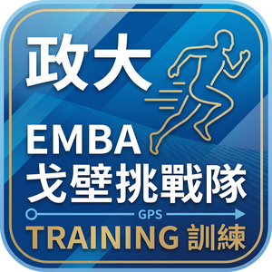

隱私權政策 Privacy Policy
NCCU GobiTrack · 生效日 2026-10-31 · Effective 31 October 2026
本政策說明 NCCU GobiTrack（下稱「本 App」）如何收集、使用與保護你的資料。本 App 由國立政治大學 EMBA 戈壁挑戰隊（下稱「本隊」）開發與營運，僅供隊員、教練與幹部使用。中英文版本如有歧異，以中文為準。
1. 我們收集什麼 · What we collect
- 帳號資料：登入用的 Email、姓名、分隊、角色，來自本隊的報名名冊。
- Garmin 資料（你連接 Garmin 帳號並同意後）：跑步等活動紀錄（時間、距離、配速、心率、軌跡、海拔）與每日健康數據（睡眠、心率變異 HRV、靜止心率、體重）。資料由 Garmin Connect 透過 Garmin Connect Developer Program API 傳送到本 App 的伺服器。
- 你在 App 裡輸入的資料：手錶型號、課表回饋、教練建議等。
Account data (email, name, team, role) from the team roster; Garmin data you authorize (activities: time, distance, pace, heart rate, GPS track, elevation; daily health: sleep, HRV, resting heart rate, weight) delivered by Garmin Connect via the Garmin Connect Developer Program API; and what you enter in the app.
2. 我們怎麼使用 · How we use it
- 顯示你自己的訓練紀錄、心率區間、週跑量與訓練負荷。
- 讓本隊教練與訓練長看到隊員的訓練狀況，以便排課表與給建議。
- 把教練開的課表與路線推送到你的 Garmin 手錶。
- 隊內跑量排行只顯示距離，不顯示心率等健康數據。
Garmin 資料只用於上述用途。我們不做廣告、不做行銷分析、不用任何 AI 或機器學習系統處理 Garmin 資料、不用 Garmin 資料訓練或改善 AI 模型。
Garmin data is used only to show your own training records to you and the team coaches, and to send coach-planned workouts and courses to your watch. No advertising, no marketing analytics, no AI or machine-learning processing, and Garmin data is never used to train, evaluate or improve AI models.
3. 誰看得到、誰處理 · Who receives or processes it
- 本隊的教練、訓練長與幹部看得到隊員的訓練與健康數據；一般隊員只看得到自己的。
- Supabase（supabase.com）：本 App 的資料庫與伺服器代管商，資料存放於澳洲雪梨機房。Supabase 只提供主機服務，不會自行使用你的資料。
- Garmin：你的 Garmin 資料來源；Garmin 的隱私政策見 garmin.com/privacy/connect。
除上述以外，沒有其他第三方（包括分析服務、整合夥伴、技術供應商、AI 或資料處理服務）會收到或處理你的 Garmin 資料。我們不出售、不出租、不交換你的任何資料，也不會把 Garmin 資料轉送到其他服務或平台。
Visible to the team's coaches and staff; stored with Supabase (hosting provider, Sydney, Australia). No other third party, including analytics, integration partners, technology vendors, AI or data-processing services, receives or processes Garmin data. We never sell, rent, exchange or forward your data to any other service.
4. 同意與撤回 · Consent and withdrawal
連接 Garmin 帳號時，Garmin 會請你確認要分享哪些資料；按下同意即表示你同意本政策。你可以隨時：
- 在本 App「設定」頁按「中斷 Garmin 連接」，之後 Garmin 不再傳送新資料；
- 到 Garmin Connect 的帳號設定移除本 App 的授權；
- 要求刪除已儲存的資料（見第 6 條）。
You consent when you authorize the app in Garmin Connect. Withdraw at any time by disconnecting Garmin in the app's Settings, or by revoking the app in your Garmin Connect account settings; you may also request deletion of stored data.
5. 保存期間 · Retention
資料保存到你退出本隊或要求刪除為止；隊伍賽季結束後一年內，我們會刪除未再使用的帳號資料。
Data is kept until you leave the team or ask for deletion; inactive accounts are deleted within one year after the season ends.
6. 你的權利 · Your rights
你可以隨時要求查閱、更正、刪除或匯出你的資料，或撤回同意。請在 App 的「設定」頁操作，或寄信到 davidlin0720@gmail.com，我們會在 14 天內處理。刪除後，你的活動與健康資料會從本 App 的伺服器移除（Garmin Connect 帳號內的原始資料不受影響）。
You may access, correct, delete or export your data, or withdraw consent, from the app's Settings or by emailing davidlin0720@gmail.com; we respond within 14 days. Deletion removes your data from our servers (your Garmin Connect account is unaffected).
7. 安全 · Security
資料傳輸全程加密（HTTPS）。伺服器以列級權限控管，隊員只能讀自己的資料，教練只能讀隊內資料。API 金鑰只存放在伺服器端。如發生資料外洩，我們會在知悉後 72 小時內通知受影響的隊員，並依規定通知 Garmin。
All transfers are encrypted (HTTPS); row-level access control; API credentials are kept server-side only. In case of a breach we notify affected members within 72 hours and Garmin as required.
8. 政策變更 · Changes
政策若有修改，會在本頁更新生效日並在 App 內通知。
9. 聯絡 · Contact
國立政治大學 EMBA 戈壁挑戰隊 · 祕書長 林宏益 David Lin · davidlin0720@gmail.com
Garmin and Garmin Connect are trademarks of Garmin Ltd. or its subsidiaries.